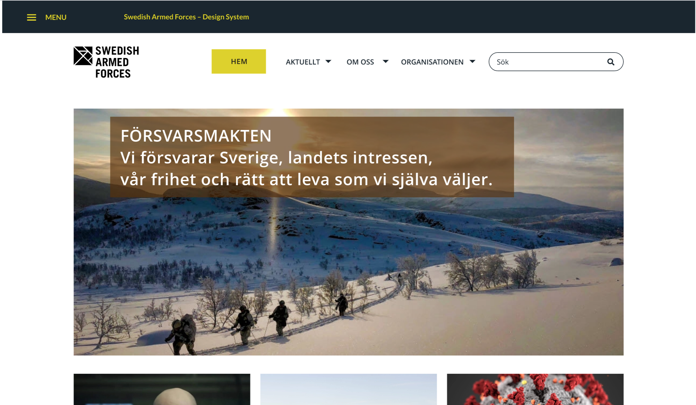

UX
GRÄNSSNITTSDESIGN
TillbakaIndividuell inlämningsuppgift: Att skapa ett designsystem, EC Utbildning 2021.
För denna uppgift ska ni skapa ett designsystem utifrån en varumärkesmanual. Ni ska fokusera på att bygga upp varumärkes digitala UI-komponenter och på att skapa UX riktlinjer. Sen ska ni producera ett exempel i webbläsar storlek, och en för mobil storlek. Ni kan använda vilket verktyg som ni vill, t.ex. Figma, XD, HTML+CSS, JS eller en kombination av dem.
Länk: Swedish Armed Forces Brand Manual
Notera! Denna manual är inte i bruk längre! Och ni kan fokusera helt på stilen och färger, och hålla loggor och text neutralt, om ni inte vill ha något med armén med.
Detta ska ni tänka på:
- Hur ska komponenterna se ut för att passa varumärket
- Vilka skalor ska systemet ha
- Vad är skillnaden mellan webbläsare och mobil
- Vad för flöde ska systemet rikta sig mot
Uppgiften skulle inlämnas som en pdf-fil.
Min prototyp
Min rapport
